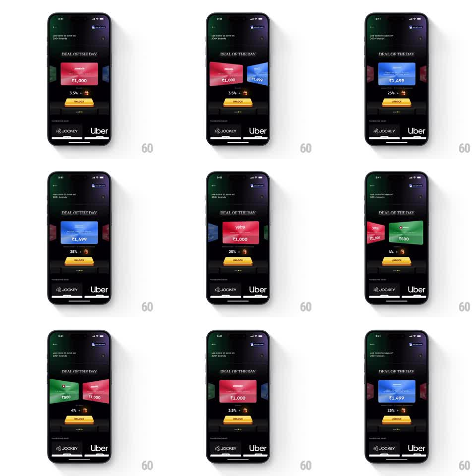

Media
Frame-by-frame

Rebuild this interaction 1:1: CRED's "Deal of the Day" 3D carousel - a swipeable deck of brand offer cards on a dark screen where the front card faces the viewer and adjacent cards rotate away in 3D perspective, scaling down and dimming as they recede.

Rebuild this interaction 1:1: CRED's "Deal of the Day" 3D carousel - a swipeable deck of brand offer cards on a dark screen where the front card faces the viewer and adjacent cards rotate away in 3D perspective, scaling down and dimming as they recede.
## Integration
Integration: stack-agnostic spec - springs given as stiffness/damping, timed motions as duration + curve; map every value to your framework and animation library of choice.
## Scene
Dark near-black screen. Top bar with back chevron and a coin balance pill. Header "DEAL OF THE DAY" in small spaced caps. Center: a horizontal 3D carousel of rectangular brand deal cards (each showing brand name, offer, and a rupee amount like Rs 1,000 / Rs 1,499 / Rs 500 on saturated brand colors - pink, blue, green). Below the carousel: a discount line ("3.5% +" with an emoji) that updates per card, a yellow UNLOCK button, and a static row of brand logos (Jockey, Uber).
## Motion spec
Pattern: gesture-driven 3D cover-flow carousel.
- Idle: front card flat at scale 1.0, full opacity; neighbors peek from both edges, rotated ~45deg around the Y axis away from center, scale ~0.8, opacity ~0.6.
- Drag: the deck tracks the finger horizontally; each card's Y-rotation, scale, and opacity interpolate continuously with its distance from center (rotation 0 at center to ~50deg at the edges).
- Release: snap the nearest card to center (spring ~260/26, ~350ms settle, no overshoot bounce).
- The discount value and emoji under the carousel crossfade (150ms) to the centered card's values once a new card passes 50% of the way in.
- UNLOCK button and brand row stay fixed; only the card deck and the discount line move.
## Calibration
- The 3D rotation is the star - cards must visibly tilt around the vertical axis with perspective, not just slide and shrink.
- Perspective depth: side cards sit slightly behind the front card (z-offset ~40pt) so the front card overlaps them.
- Snap is firm and quiet; one settle.
## Reduced motion
Swipe moves the deck with a 200ms ease-out slide; no Y-rotation, cards only scale to 0.9 and fade to 0.5 at the edges.
## Don't miss
- Both left and right neighbors are visible and mirrored - the deck reads as a circular 3D ring, not a flat strip.
- The discount line under the carousel swaps with the card, keeping text and emoji paired to the centered deal.